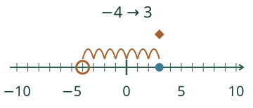
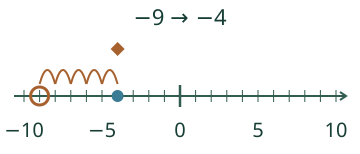
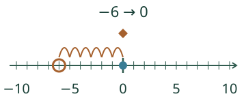
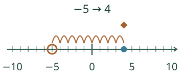

Loikka mittaa kahden paikan välin. Muuttuuko etäisyys, jos päätepisteet vaihtuvat?
Etäisyys vai etumerkki?
Nollan yli

Samalla puolella

Ennusta
Mikä etäisyys jää, kun molemmat päätepisteet ovat −2?
Paljasta ajatus
Sama paikka tarkoittaa 0 väliä. Etäisyys ei siis ole aina positiivinen, mutta se ei ole negatiivinen.
Itseisarvo on väli nollaan

Yleisesti kahden luvun etäisyys on |b − a|. Vähennysten b − a ja a − b etumerkit voivat olla eri, mutta niiden itseisarvot ovat samat.
Korkeusero samasta pinnasta

Kokeile itse
Lisää tutkittavaa
Kokeile mallissa −8 ja −3. Siirrä kumpaakin kaksi yksikköä oikealle: −6 ja −1. Sama etäisyys säilyy. Saatko etäisyyden säilymään myös vaihtamalla molempien etumerkit?
Lopuksi: −4 < 4, mutta |−4| = |4|. Mitä kumpikin vertailu kertoo?
Opettajalle ja ilman ruutua
Luokat 7–9. Vaadittu M-NEG-02; M-NEG-03 on vahva tuki, ei uusi kova portti. Esimerkki opettaa etäisyyden, ei kokonaislukujen kaikkia laskusääntöjä. Mallin päätepisteet ovat −10…10, etäisyys 0–20. Sama nollataso ja yksikkö säilyvät. Korkeuseron yhteydessä ilmoitetaan metrit ja sama pystysuora. Askelpainallus esittää yhden lukuvälin, ei sekuntia tai liikkeen nopeutta.
Merkitse paperisuoralle kaksi pistettä ja käytä samanmittaista paperiyksikköä niiden välissä. Vaihda lähtö ja loppu, käytä myös samaa pistettä ja nollaa. Vertaa erikseen kahden luvun järjestystä ja niiden väliä. Vastata voi kirjoittaen tai näyttäen ilman puhe-/nimeämisporttia. Mallin apukaaret ja valmiin etäisyyden näyttö ovat opetustukea; tarkistus ei osoita itsenäistä strategiaa, mittavälineen käyttöä, säilyvää oppimista tai formaalia hallintaa. Ei oppilashistoriaa tai aikarajaa. Kokonaislukuarvoinen tavallinen desimaaliteksti sallitaan etumerkkeineen ja ylimääräisine nollineen, enintään128 merkkiä; ei lausekkeita, murtolukuja tai eksponentteja.